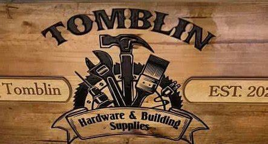

Tomblin Hardware LLC is a locally owned hardware store located in Oceana, West Virginia. We offer a wide range of building materials, roofing supplies, flooring, plumbing supplies, and much more. We strive to provide quality products and services to meet the needs of our customers.
| "Tomblin Hardware LLC offers a wide range of building materials, roofing supplies, flooring, plumbing supplies, and more. Visit us at 11487 Appalachian Highway, Oceana, WV 24870, or call us at (304) 682-4665 for quality products and services." |
At Tomblin Hardware, we provide a diverse range of products to meet all your building and renovation needs:
At Tomblin Hardware, we are committed to providing exceptional customer service and quality products. Our knowledgeable staff is here to help you with any project, big or small. Visit us today and let us help you get started on your next project!